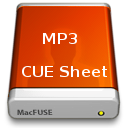

CueFuse - How to use it
Starting/Stopping CueFuse
You can start CueFuse using the Application Menu. CueFuse won't show
anything, but as a result:
<your home
directory>/CueFuse
has been mounted to:
<your home
directory>/Music/CueFuse
Nou you can start filling up the <your
home
directory>/CueFuse folder with your MP3/CUE Sheet files.
The CUE Sheets will show up in <your
home
directory>/Music/CueFuse as Folders with .WAV files. See
the example below:
Adding tracks to iTunes
First, make sure that you have turned
of copying music to the iTunes folder. You can do this by
opening the preference dialog of iTunes (iTunes menu, preferences...).
It's in the Advanced
Tab. Turn of 'Copy files to
'iTunes Media' when adding to the library'. Otherwise, all the
.WAV files will be copied to the iTunes library and you don't want
that.
Now, just import WAV files from the <your home
directory/Music/CueFuse> directory. See the image above, on
how it looks. The '_.mp3'
files contain the image of the CUE File (yes, cover art is supported,
see the CUE Sheet example here). This
is the only way to be able to add cover art to your .WAV files.
.WAV files do not contain any Artist/Album/Genre information, so after
importing a directory you must select all imported tracks, including
'_.mp3' and manually fill in Artist/Album/Genre information. NB. The
only way to add an image is using '_.mp3', which is generated from the
CUE Sheet.
When you're done, it should look like the image below. Success!
© 2011 Hans Oesterholt-Dijkema -
Artistic License